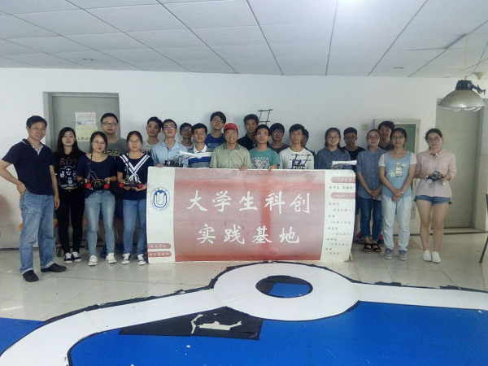

由上海大学教务处主办、机电工程与自动化学院承办，上海大学自强队组织的智能车校内赛于2017年6月24日下午15时在校外G3楼10楼举行，本次比赛的目的一方面是为了增强本科生的动力实践能力，让他们了解智能车的制作过程；另一方面也是为今年的全国大学生智能车竞赛华东赛区选拔优秀队员。自强队指导教师陈万米、黄慎之老师，自强队智能车研究生领队叶立俊以及来自机自学院的参赛队员共计20余人出席了此次大赛。根据比赛前期的筛选，共有7支队伍入围上海大学智能车校内赛。本次比赛采用光电类和电磁类分组计时竞速的规则，每支队伍总共有三次试跑机会，最终成绩以每支队伍在赛道上跑完1个全程用时较短的时间为有效成绩。比赛过程中参赛队员情绪高涨 ，大家积极调试自己的小车，希望以最好的状态跑完全程。最终，电磁普通组的张思远同学和电磁节能组的吴绍聪同学分别以全程18.6s和21.6s的成绩获得第一、二名的优异成绩。比赛的最后，两位指导老师对同学们付出的努力给予了肯定，并鼓励同学们要在艰苦环境下砥砺前行，继续发扬上大学子自强不息的精神，争取在华东赛和国赛中取得更好的成绩。
本次赛事在学院领导和两位指导老师的大力关心和支持下顺利落下帷幕，参赛队员们也定会带着大家的祝福和希冀战胜一切困难，为备战全国大学生第十二届智能车竞赛做最后的冲刺，为自强队和学校争取荣誉，也为自己的学业生涯增添亮丽的色彩。
上海大学自强队供稿
2017年6月25日